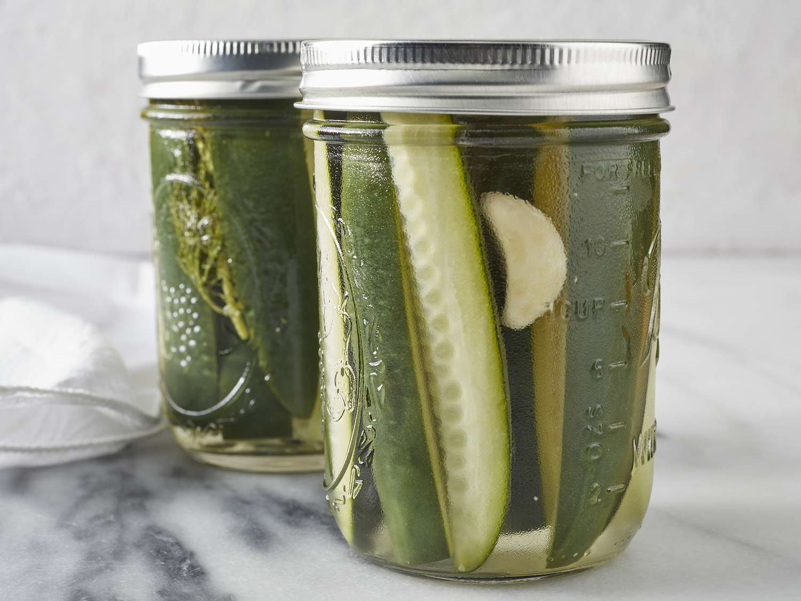

Crispy Kosher Tasty Dill Pickles

Description
These pickles are addicting
Ingredients
- 1 mason jar of 1 quart
- 1/2 pound of 4-inch pickling cucumbers
- 4 heads of fresh dill
- 1 clove of garlic
- 1 small hot pepper of your choice (optional)
- 2 1/4 cups of water
- 3/4 cups of vinegar
- 1 tablespoon of pickling salt
Directions
- Rinse and clean the cucumbers.
- Remove the tips and stems of the cucumbers.
- Pack the cucumbersloosely into the mason jars with 1/2 inch of space at the top.
- Add the dill, garlic, pepper to the jar.
- Combine the water, vinegar, and salt into a brine.
- Boil the brine.
- Pour the hot brine into the jar and seal the jar.
- Let set for a week and then enjoy.